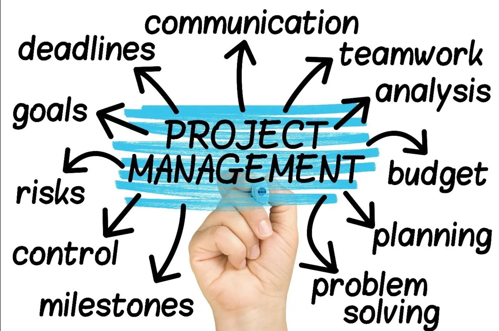
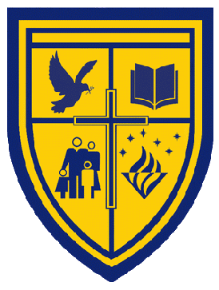
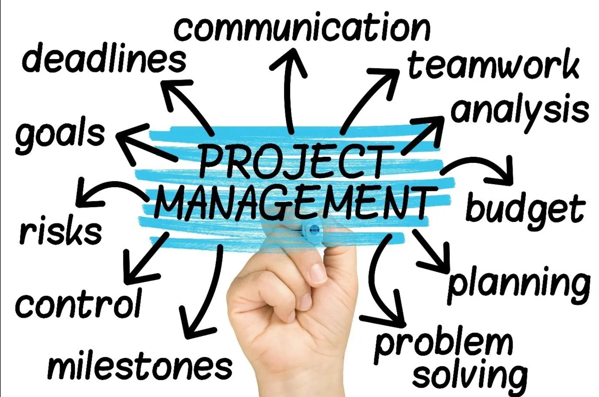
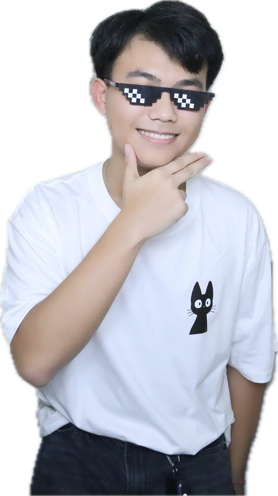

Skills
⚫ Presenting
⚫ Video Editing

⚫ Project Management
My Grandmother once said, A knife can only bring happiness when used in cooking.
-Tendou Souji
Hello, my name is Tana Udompornkul. I graduated from Sarasas Ektra School which encourage and enhace students to improve their soft skills and participate in various type of activities.
While I was growing up, my interest in game and music has significantly increase. I was always interest in this field of work of this entertainment which use a lot of creativity. However, creativity is not the only skill that will be use in this field of work. The management, communication, and logic are also important which a lot of these come from computer engineering.
In my previous role at Sarasas Ektra School, I was selected to the vice president of the batch. I am assigned to encourage and manage others in a lot of various type of activities that were assign to do with everyone such as the Year 11 camp which help the less privileged students at Phetchaburi. Moreover, others group and class related work were also managed by me and have a great successful throughout my lead, yet I never improve my communication skill. I never ignored other's opinion, conflicts, or problem, but I see these problem as a challenge to be solved which the after effects could create a bond between the group and class.
KG.1 - Year12: Sarasas Ektra School
⚫ Presenting
⚫ Video Editing
⚫ Project Management
Instagram: tanau.3360
Gmail: tanau.3360@gmail.com
Telephone: 082-113-9665
